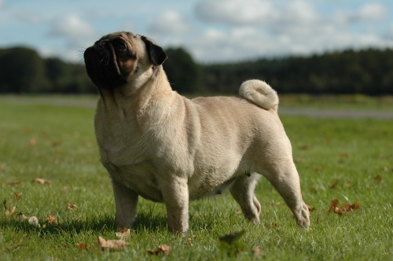

'We're doing a whole big thing here'
(The "It's Just Not the Same Without 'em" Page)
Or, 'But, I needed one of dem! Mom! Mom!'
You know how there's all different breeds of dogs, and they're all awesome?
And how little pug dogs always have breathing problems because of their flat cute widdle faces, oh yes they do?
But I mean, what's your point? No pug dogs? Pug dogs with long noses?

Or how if you're playing with Action Guys, you need one with a rocket pack, and one with lightning, and one with a bazooka arm, and one with like camo, and some others? Like, you need the whole set or it's just not even worth it. But the camo guy doesn't even have the rocket pack, a-sheesh Mom, and all that.